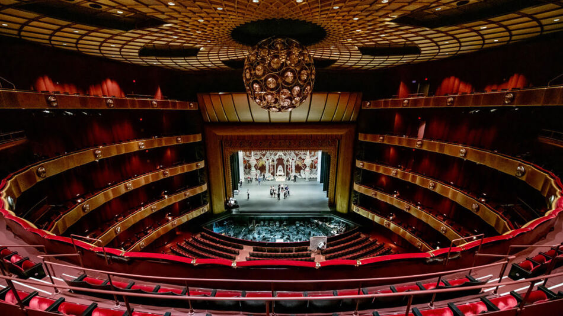
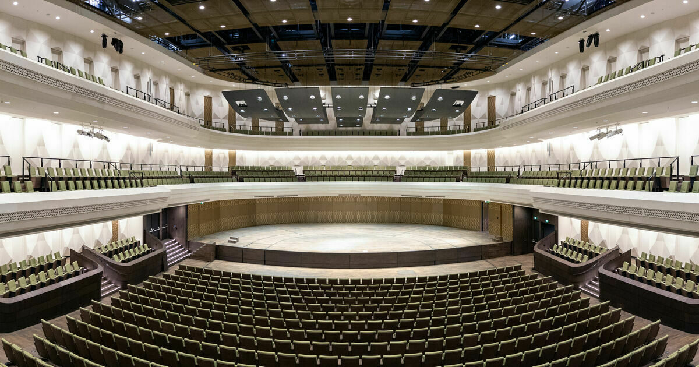
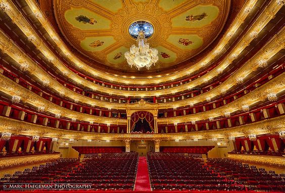
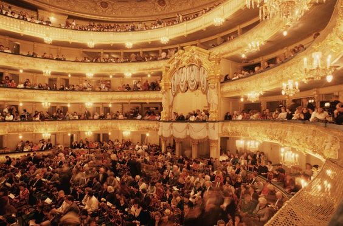
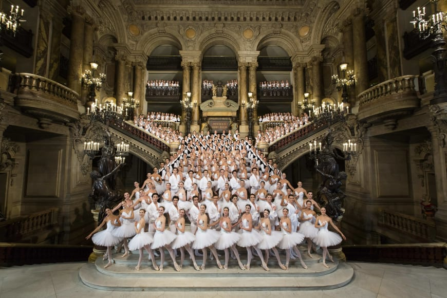

Danas, balet i njegovi različiti stilovi postaju sve popularniji. Postoji na stotine baletskih kompanija širom sveta. Ovo su neke od najpopularnijih i najboljih baletskih kompanija.
New York city ballet
Njujorški balet, ranije (1946–48) Baletsko društvo, rezidentna baletska kompanija njujorškog državnog teatra u Linkoln centru za
scenske umetnosti. Kompaniju, prvo nazvanu Baletsko društvo, osnovali su 1946. koreograf Džordž Balanšin (umetnički direktor) i
Linkoln Kirštajn (generalni direktor) kao privatnu pretplatničku organizaciju za promociju lirskog pozorišta. Škola američkog baleta (S.A.B.), koju je Balanšin osnovao, je škola za obuku kompanije. NYCB i dalje ima najveći repertoar od svih američkih baletskih kompanija. Često postavlja 60 ili više baleta u zimskoj i prolećnoj sezoni u Linkoln centru svake godine, i 20 ili više u letnjoj sezoni u Saratoga Springsu. Gradski balet je izveo Krcka Oraščića, Romea i Juliju, San letnje noći i mnoge druge. NYCB izvodi jesenje, zimske i prolećne repertoarske sezone u pozorištu David H. Koch u Linkoln centru, kao i Krcka Oraščića Džordža Balančina tokom novembra i decembra; imaju letnju rezidenciju u Saratoga Performing Arts Centru i redovno gostuju na međunarodnim turnejama.

Nederlands dans theater
NDT (Nederlands Dans Theater) je jedna od vodećih svetskih kompanija savremenog plesa. Grupa ima sedište u Hagu, ali nastupa
pred međunarodnom publikom od 150.000 posetilaca širom Evrope, Amerike, Azije i Australije. Od osnivanja 1959. godine od strane
Benjamina Harkarvija, Aarta Verstegena i Carela Birnija u saradnji sa osamnaest plesača iz Holandskog nacionalnog baleta (tada
poznatog kao Nederlands Ballet), NDT je prokrčio sopstveni put u polju savremenog plesa. Koreografi poput Glena Tetlija i Hansa
van Manena istakli su se svojim avangardnim pečatom na umetničkom licu kompanije. Njihove nekonvencionalne i progresivne
produkcije stavile su NDT na nacionalnu i međunarodnu scenu. Od tada, kompanija je izgradila bogat repertoar koji se sastoji od
više od 620 baleta poznatih koreografa kao što su Jiří Kylián, Hans van Manen, Sol León i Paul Lightfoot, Crystal Pite i Marco
Goecke, Johan Inger, Medhi Walerski, Ohad Naharin, Alexander Ekman, Gabriela Carrizo, Franck Chartier, Hofesh Shechter, Edward
Clug, Sharon Eyal i Gai Behar i mnogi drugi.

Boljšoj baletr
Boljšoj balet je jedna od najprestižnijih i najpoznatijih baletskih kompanija na svetu. Osnovana 1776. godine, smeštena je u
Moskvi, u Rusiji, i poznata je po svojim veličanstvenim produkcijama i izuzetnim plesačima. Boljšoj balet ima bogatu istoriju
izvođenja klasičnih remek-dela poput Labudovog jezera, Šegrta Hlapića i Don Kihota, kao i savremenih dela. Sa svojim impresivnim
repertoarom i vrhunskim plesačima, Boljšoj balet i dalje očarava publiku širom sveta svojom izuzetnom umetnošću i tehničkom
izvrsnošću. U 21. veku, trupa je dobila pravu priliku da se oproba u različitim žanrovima i stilovima. Balet Boljšoj je uspešno
izveo nove balete Džordža Balanšina, kao i balete Džona Nojmajera, Jirija Kiliána, Vilijama Forsajta, Hansa van Manena, Morisa
Bejarta, zagonetne koreografije Tvilje Tarp i savremenog stila u delima Matsu Eka, Pola Lafuta i Sola Leona. Najpoznatiji član
ove kompanije je primabalerina asoluta Svetlana Zaharova.

Marinski balet
Mariinski balet, ranije (1935–1991) poznat kao Kirov balet, istaknuta je ruska baletska kompanija koja je deo Marinskog
pozorišta opere i baleta u Sankt Peterburgu. Njene tradicije, koje potiču od njenog prethodnika - Carskog ruskog baleta,
zasnovane su na radu vodećih koreografa 19. veka. Marinski balet je priznat kao jedna od najvećih baletskih kompanija na svetu i
zapošljava preko 200 plesača, uključujući rezervnu trupu i umetnike u karakteru. Direktor Mariinskog baleta je Makharbek Vaziev
od 1997. godine, kada je nasledio Olega Vinogradova. Uzorom su mu bili drugi vodeći opersko-baletski teatri poput Kraljevske
opere u Londonu i La Scale u Milanu. Sada su kako Marinski balet tako i Marinska opera pod upravom samog Marinskog pozorišta, a
umetnički direktor je Valeri Gergijev, koji je takođe direktor operske kompanije. Obe kompanije deluju kao odvojene jedinice.
Godine 1934. Agripina Vaganova je imenovana direktorkom horeotehničkog instituta, škole koja danas nosi njeno ime: Vaganova
baletska akademija. Ova škola priprema plesače za nastupe sa Mariinskim baletom. Do danas, Mariinski balet je i dalje povezan sa
ovom školom, koja se sada zove Vaganova baletska akademija.

Paris opera ballet
Paris opera ballet je francuska baletska kompanija koja je sastavni deo Pariskog operskog ansambla. To je najstarija
nacionalna baletska kompanija, a mnoge evropske i međunarodne baletske kompanije mogu pratiti svoje poreklo do nje. Ona se i
dalje smatra jednom od četiri najprestižnije baletske kompanije na svetu, zajedno sa Boljšoj baletom u Moskvi, Mariinskim
baletom u Sankt Peterburgu i Kraljevskim baletom u Londonu. Od decembra 2022. godine, kompanija je pod vođstvom Žoze Martineza,
direktora plesa. Baletska kompanija se sastoji od 154 plesača, među kojima su 17 Danseurs Étoiles (Zvezde plesa).

Kraljevski balet
Jedna od najuglednijih baletskih kompanija na svetu, smeštena u Londonskom Kraljevskom opernom domu. Pod vođstvom Kevina O'Harea, Kompanija spaja tradiciju i inovaciju u izuzetnim izvođenjima. Široki repertoar kompanije obuhvata klasična dela 19. veka, izuzetno nasleđe radova osnivačkog koreografa Frederika Eštona i glavnog koreografa Kennetha Makmilana, kao i značajna nova dela rezidencijalnog koreografa Vejna Makgregora i umetničkog saradnika Kristofera Vildona. Kraljevski balet je posvećen obogaćivanju života ljudi putem baleta.